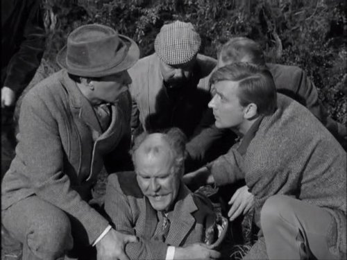

#11848 Der Diener
Alternativ: The Servant (Englischer Titel)
Auszeichnungen: 3 BAFTA-Awards gewonnen

 IMDB-Wertung: 7.9 / 10
IMDB-Wertung: 7.9 / 10  Metascore: 93
Metascore: 93 
Der wohlhabende Londoner Playboy engagiert den verführerischen und sorgfältigen Butler Hugo Barrett, der Tonys neu gegründeten Haushalt leiten soll. Doch schon bald erlangt Barrett mit seiner ehrfurchtgebietenden Perfektion eine raffinierte und heimtückische Form der Kontrolle über Tonys leben, mit der sich vom Diener zum Herren erhebt und die Machtverhältnisse in ihr Gegenteil verkehrt...
Jahr: 1963
Dauer: 116 Minuten
FSK: 12
Land: England Studio: Warner Bros.Tonspuren:
Untertitel: Deutsch,
Auflösung: 1080p (1776x1080) Größe: 8130 MB
Genre: Drama
Regisseur: Joseph Losey
Drehbuch: Harold Pinter, Robin Maugham
Soundtrack: John Dankworth
Darsteller:
- Dirk Bogarde als Barrett
- Sarah Miles als Vera
- Wendy Craig als Susan
 James Fox als Tony
James Fox als Tony- Catherine Lacey als Lady Mounset
-  Richard Vernon als Lord Mounset
 Ann Firbank als People in restaurant: Society Woman
Ann Firbank als People in restaurant: Society Woman- Doris Nolan als People in restaurant: Older Woman
 Patrick Magee als People in restaurant: Bishop
Patrick Magee als People in restaurant: Bishop- Harold Pinter als People in restaurant: Society Man
 Guy Standeven als Restaurant Diner (uncredited)
Guy Standeven als Restaurant Diner (uncredited)- Jill Melford als People in restaurant: Younger Woman
- Alun Owen als People in restaurant: Curate
- Derek Tansley als People in restaurant: Head Waiter
- Brian Phelan als Man in Pub
- Hazel Terry als Woman in Bedroom
- Philippa Hare als Girl in Bedroom
- Dorothy Bromiley als Girl in Phone Box
- Alison Seebohm als Girl in Pub
- Chris Williams als Cashier in Coffee Bar
- Gerry Duggan als Waiter
- John Dankworth als Jazz Band Leader (uncredited)
- Harriet Devine als Girl (uncredited)
- Davy Graham als Guitarist (uncredited)
- Aileen Lewis als Restaurant Diner (uncredited)
- Colette Martin als Girl (uncredited)
- Joanna Wake als Girl (uncredited)
- Bruce Wells als Sidewalk Painter (uncredited)
Datei: X:\1963\Diener, Der (1963, FSK12, 1776x1080).mkv seit 02.10.2019
Festplatte: Gemischt-01+Anime
 Es gibt insgesamt 23 Filme in der Gruppe '1963'
Es gibt insgesamt 23 Filme in der Gruppe '1963'